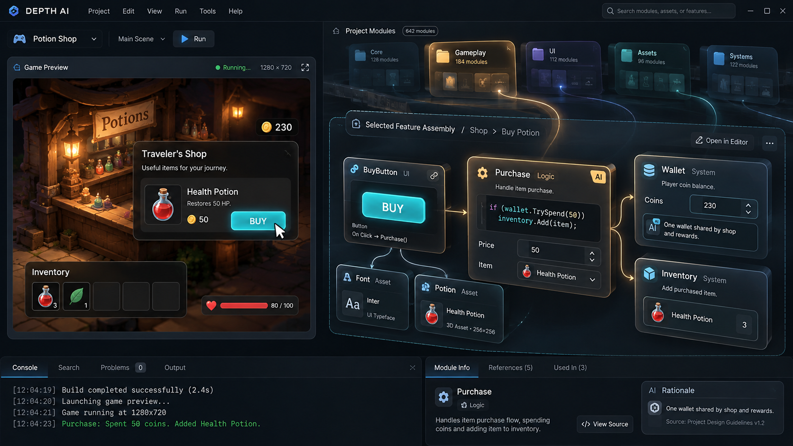
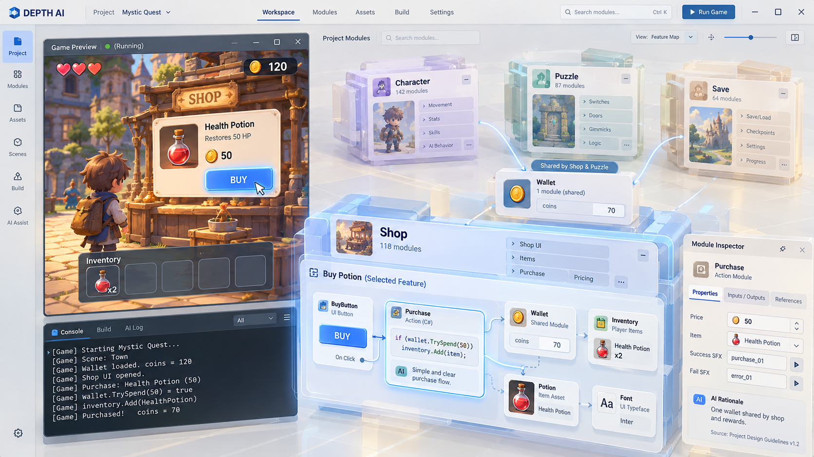
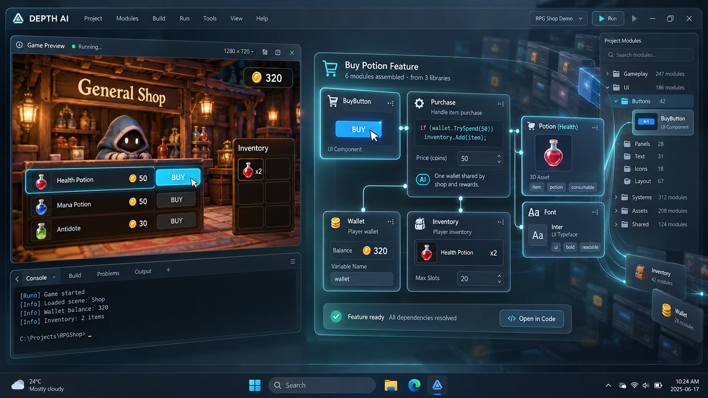
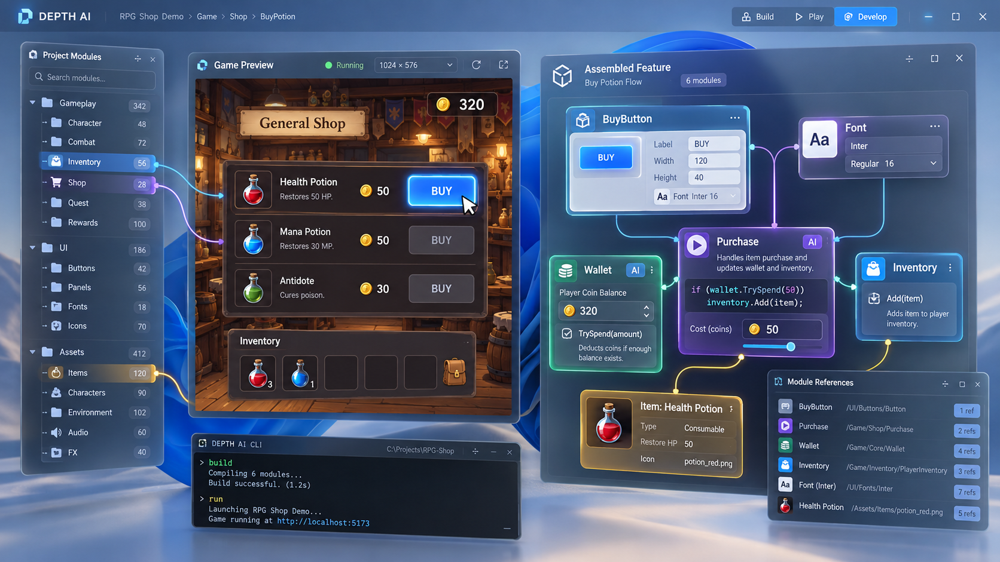
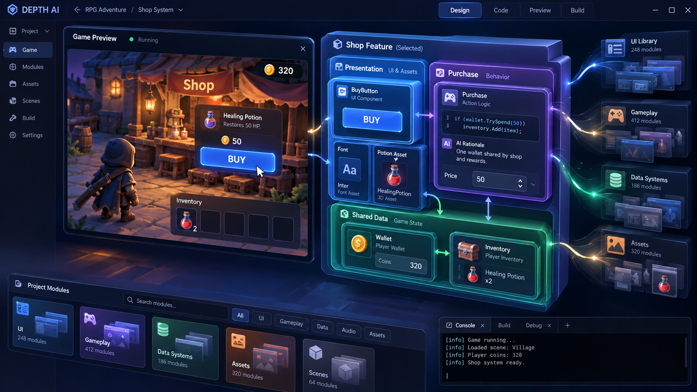
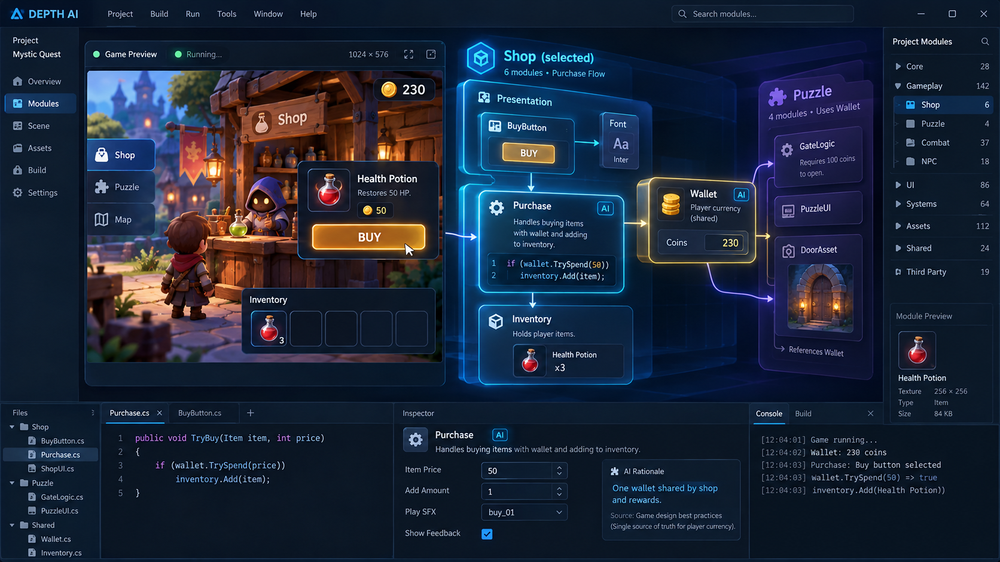
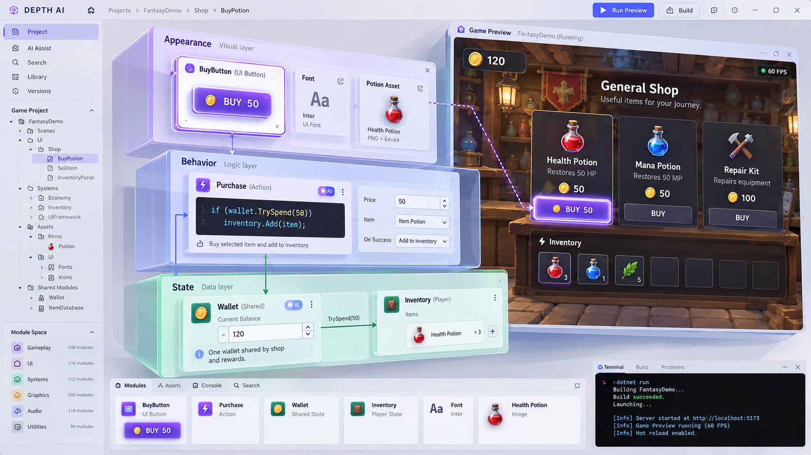
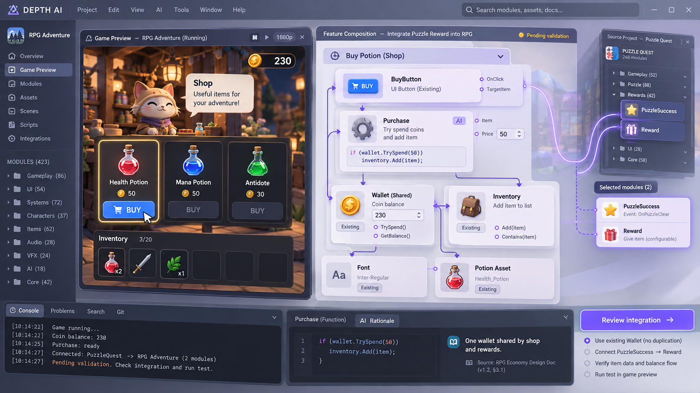
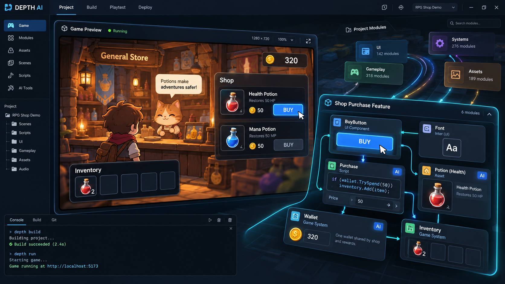
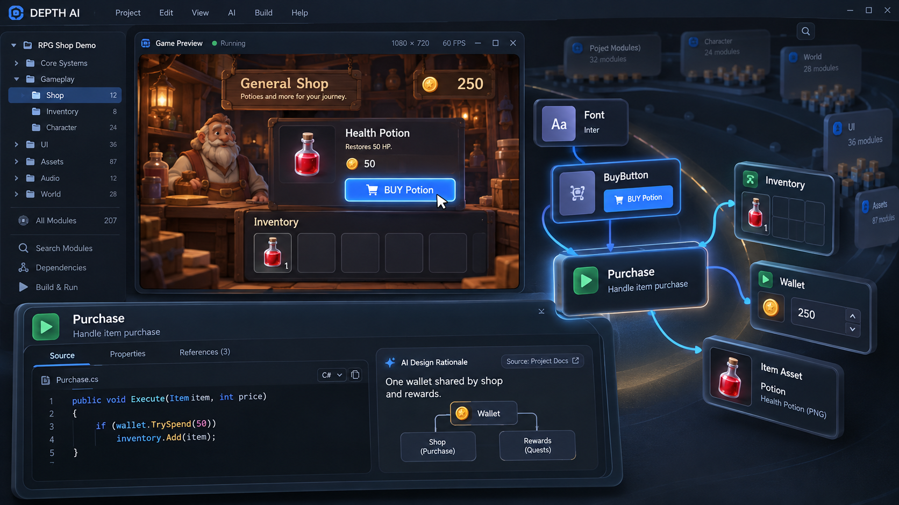

프리뷰에서 기능 선택 → 관련 모듈이 모여 기능 구성 → 모듈 속성과 코드 수정. 같은 핵심 동작을 6가지 공간 구성으로 비교합니다.아래 이미지는 imagegen으로 생성한 디자인 예시이며, 구현 완료된 제품 화면이 아닙니다. 이미지를 누르면 크게 볼 수 있습니다.










번호로 선택해 주세요. 예: “05번의 투명한 느낌에 07번의 구성 방식.” 별표로 표시한 선택 후보는 이 브라우저에 저장됩니다.